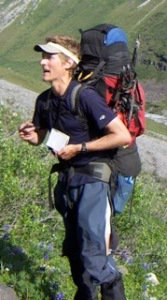
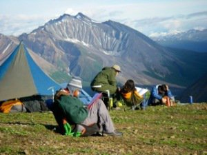

Accessible, high-quality science education is a critical piece of a positive, forward-looking society. Furthermore, I believe that it is a fundamental obligation of publicly funded researchers to share their knowledge and passion for their subjects with the public. To meet these needs, I share my work through a variety of teaching and outreach activities.
In my present role, as faculty of the Department of Geological Sciences at the University of Idaho, I teach courses on Glaciology and the Dynamic Cryosphere, Geomorphology, and Introduction to Physical Geology.
At the University of Alaska, I taught the glaciers component of a 3-credit, 80-person, freshman-level class on Glaciers, Earthquakes and Volcanoes. At the University of Colorado, I was also the sole instructor of several sections of a lab and field trip introductory course in geology. I also served as teaching assistant to an upper-division course in geomorphology.
From 2007 to 2012, I was an instructor for the
Alaska Wrangell  


Some of the talks I've given to the non-researcher public are listed on my CV, downloadable through the menu above.